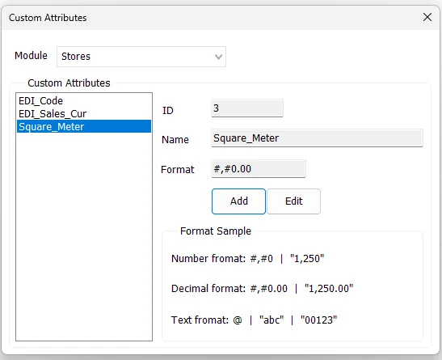

Custom Attributes
Custom Attributes defines extra business fields for Suppliers and Stores without changing the standard IMS master-data structure. The definition created here becomes available in the corresponding Supplier or Store screen, where a value can be maintained for each individual record.

Supported modules
The current Custom Attributes screen supports two modules:
| Module | Definition storage / use |
|---|---|
| Suppliers | Defines additional Supplier fields that can later be given a value on each Supplier record. |
| Stores | Defines additional Store fields that can later be given a value on each Store record. |
Changing the Module switches the attribute list between Supplier attributes and Store attributes.
Attribute fields
| Field | Purpose |
|---|---|
| ID | IMS internal identifier for the Custom Attribute. It is assigned automatically when a new attribute is added. |
| Name | The attribute name used throughout IMS. Spaces entered in the name are stored as underscores. |
| Format | Optional display format used when the attribute value is presented in reports or related screens. |
Format examples
The screen includes examples for the most common display formats:
| Value type | Example format | Example output |
|---|---|---|
| Number | #,#0 | 1,250 |
| Decimal | #,#0.00 | 1,250.00 |
| Text | @ | abc or 00123 |
Square_Meter can use a decimal format, while an external-system code such as EDI_Code should normally be treated as text so leading zeroes are preserved.Add a Custom Attribute
- Select Suppliers or Stores from Module.
- Click Add.
- Enter the attribute Name.
- Enter the required Format, if any.
- Click Save.
The Name cannot be empty, and IMS prevents another Custom Attribute with the same name from being created in the selected module.
Edit a Custom Attribute
Select an existing attribute and click Edit. The Name and Format can be changed, then saved. The Module selector is temporarily locked while the attribute is being edited so the definition remains attached to the correct module.
Where the attribute values are entered
This Tools screen defines the Custom Attribute globally. It does not assign values to individual suppliers or stores.
| Definition | Value maintenance |
|---|---|
| Tools → Custom Attributes → Suppliers | Manage → Suppliers → Custom Attributes |
| Tools → Custom Attributes → Stores | Manage → Stores → Custom Attributes |
For example, after defining Square_Meter as a Store attribute, each Store can have its own Square_Meter value maintained in Manage → Stores.
Use in Custom Reports
Custom Attributes are also integrated with IMS Custom Reporting. If a Custom View contains a field classified as SupplierID, Supplier Custom Attributes can be added as report fields. If the Custom View contains StoreID, Store Custom Attributes can be added in the same way.
This allows business-specific classifications or integration fields to participate in reports without requiring every attribute to be added permanently as a dedicated column in the base reporting view.
Audit trail
Adding or modifying a Custom Attribute is written to the IMS activity log.